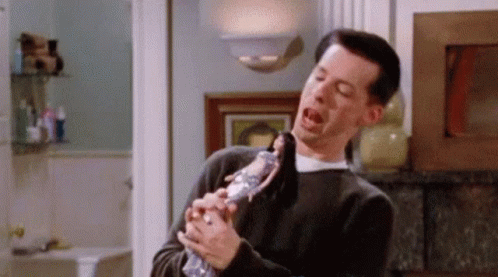

Jack McFarland
Jack is one of Will's closest friends and is a flamboyant, over-the-top gay man. He is loud, colorful, and loves musical theater. Jack is often the comic relief in the show, but he also has a serious side and experiences his own struggles with relationships and personal growth. He has a close relationship with Karen, and the two often get into hijinks together.